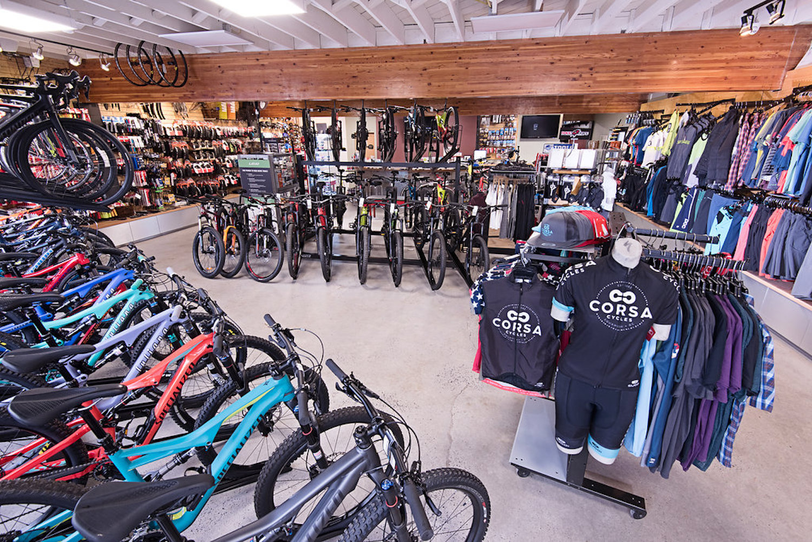
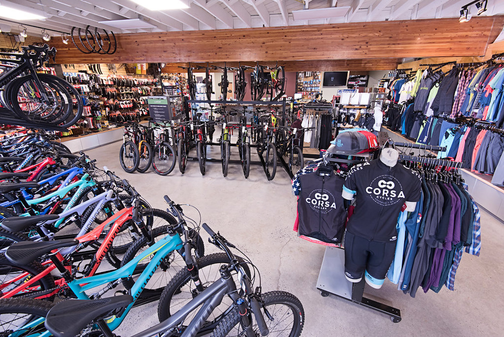

This project combines two datasets: a global airports' list and a worldwide flight list.
By joining these datasets using SQL, a comprehensive list of flights between
different cities worldwide is generated. This information is then visualized in Tableau, showcasing the
global flight network and highlighting cities with connections to other destinations. The visualization
can be further narrowed down by specifying a particular country or city of interest to show cities accessible from there.
 

This project uses data from a bike store to create a visual dashboard with Excel's advanced PivotTable capabilites.
It analyzes customer behavior such as likelihood of buying a bike based on age group, gender, and income.
Further filters were put for greater specificity.
This project also includes data cleaning, discretization, and normalization.
This Tableau dashboard explored how Canada's house prices have skyrocketed in the recent decade making a significant dent in Canadians' standard of living.
It delves into just how much Canada's housing crisis have exacerbated in recent years as well as comparing the current trends to those of the 2000s.
This Tableau Story shows how data can be dangerous when used to deliberately mislead the public. This project shows how manipulating just
one data source can portray things in both positive and negative lights. Specifically, by examining the GDP
per capita of every country since 1960, it illustrates how the EU's economy can be shown as both thriving and
struggling. It underscores the importance of considering data in context rather than taking it at face value.
This SQL data cleaning project includes tasks such as standardizing date formats and different representations into a single format, populating property address data,
breaking down address fields into individual components (address, city, and state), parsing
the owner address into separate fields,
removing duplicates, and deleting unused columns.
The SQL project analyzes COVID-19 data from the COVID deaths and
COVID Vaccinations data. It retrieves information such as total cases,
deaths, infection rates, death rates, and vaccination rates. The code compares
data across countries and continents, calculates relevant percentages, and creates a view for
visualization purposes. Its goal is to provide insights into the impact of COVID-19 and
track the progress of vaccination efforts.

This concise Tableau visualization presents up-to-date COVID-19 infection data, derived from SQL queries from the earlier project, offering valuable visual insights into the current state of the epidemic (as of August 30, 2021).